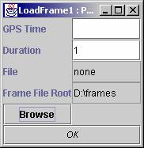
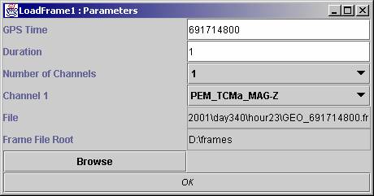
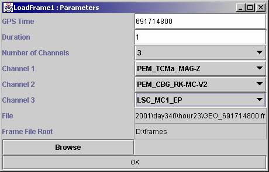

Input Types :
Output Types : SampleSet
Date :
Enter
the root directory where the frame files are stored, do this by clicking browse

enter the gps
time and press return.

A list of available
channels will appear and also the directory where the frame
file is. Select the number of
seconds, number of channels to load and which channels to view.
